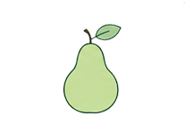
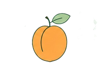
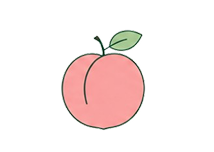
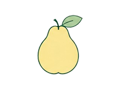

Догляд за деревами
Повна інформація по догляду за фруктовими деревами

Яблуня
- ☀️ Любить сонячні місця
- 💧 Полив 1-2 рази на тиждень
- 🌱 Підживлення навесні та восени
- ✂️ Обрізка сухих гілок щороку
- 🍎 Плодоносить у серпні-вересні
- 🌡 Стійка до морозів
- 🪲 Обробка від шкідників навесні
- 🌿 Добре росте у родючому ґрунті
- 📏 Відстань між деревами 4-5 м
- ⏳ Живе понад 30 років

Груша
- ☀️ Потребує багато сонця
- 💧 Помірний регулярний полив
- 🌱 Добриво 2 рази на рік
- ✂️ Формування крони навесні
- 🍐 Плоди достигають восени
- 🌡 Добре переносить спеку
- 🪲 Потрібен захист від грибка
- 🌿 Любить пухкий ґрунт
- 📏 Відстань між деревами 4 м
- ⏳ Може жити 40-50 років

Вишня
- ☀️ Сонячна ділянка
- 💧 Полив у спеку
- 🌱 Калійне підживлення
- ✂️ Формування крони
- 🍒 Плоди достигають влітку
- 🌡 Морозостійка рослина
- 🪲 Захист від попелиці
- 🌿 Любить легкий ґрунт
- 📏 Садити через 3-4 м
- ⏳ Дає урожай до 20 років

Черешня
- ☀️ Любить тепло та сонце
- 💧 Регулярний полив
- 🌱 Органічне підживлення
- ✂️ Обрізка після плодоношення
- 🍒 Великі солодкі плоди
- 🌡 Погано переносить сильний мороз
- 🪲 Захист від птахів
- 🌿 Родючий ґрунт
- 📏 Відстань між деревами 4-5 м
- ⏳ Плодоносить до 25 років

Слива
- ☀️ Добре освітлення
- 💧 Регулярний полив
- 🌱 Органічні добрива
- ✂️ Видалення старих гілок
- 🍑 Урожай у серпні
- 🌡 Добре переносить холод
- 🪲 Обробка від шкідників
- 🌿 Росте у вологому ґрунті
- 📏 Відстань 3-4 м
- ⏳ Живе до 25 років

Абрикос
- ☀️ Дуже любить тепло
- 💧 Полив у суху погоду
- 🌱 Мінеральні добрива
- ✂️ Весняна обрізка
- 🍊 Плоди достигають у липні
- 🌡 Боїться сильних морозів
- 🪲 Захист від грибкових хвороб
- 🌿 Пухкий та легкий ґрунт
- 📏 Відстань 4-5 м
- ⏳ Дає урожай до 30 років

Персик
- ☀️ Теплолюбна рослина
- 💧 Частий полив влітку
- 🌱 Азотні добрива
- ✂️ Щорічна обрізка
- 🍑 Великі солодкі плоди
- 🌡 Потребує укриття взимку
- 🪲 Обробка від кучерявості листя
- 🌿 Легкий родючий ґрунт
- 📏 Садити через 4 м
- ⏳ Живе 15-20 років

Айва
- ☀️ Любить сонячні місця
- 💧 Помірний полив
- 🌱 Добре переносить посуху
- ✂️ Обрізка навесні
- 🍐 Ароматні плоди восени
- 🌡 Стійка до спеки
- 🪲 Рідко хворіє
- 🌿 Росте навіть у бідному ґрунті
- 📏 Відстань між деревами 4 м
- ⏳ Живе понад 50 років